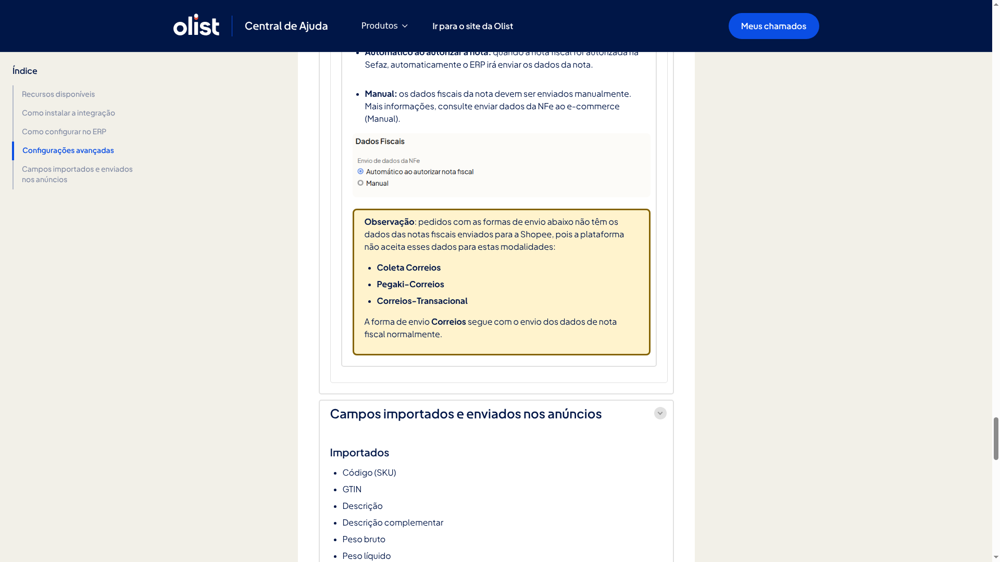

Shopee: pedidos e dados fiscais
Na aba Pedidos da integração Shopee, o ERP da Olist define como os pedidos do canal entram no ERP e como frete, endereço, etiquetas, pagamento e NF-e são tratados.
Você marca o que ocorre na importação, escolhe a impressão das etiquetas e define se a nota segue de forma automática ou manual para a Shopee.
Pré-requisitos
- A integração com a Shopee já precisa estar conectada.
Importante
- Coleta Correios, Pegaki-Correios e Correios-Transacional não recebem os dados da NF. Correios recebe.
Instruções
-
Acesse Início > Integrações.
-
No card Shopee, clique em gerenciar.
-
Abra a aba Pedidos.
-
No fluxo, marque o que deve ocorrer na importação. Nenhum item é obrigatório: Importar valor do frete, Formatar nome dos contatos, Sincronização automática, Interpretador de endereços, Importar moedas como desconto, Importar taxa de cartão como outras despesas, Organizar envio ao enviar NFe, Enviar rastreamento ao marcar enviado e Marcar entregue ao alterar situação.
-
Em Completar endereço a partir do CEP, escolha Não, Apenas se bairro não informado ou Sempre. O campo não é obrigatório.
-
Em Método de impressão de etiquetas, escolha Padrão do Canal, Formato PDF ou Impressora Térmica. O campo não é obrigatório.
-
Em Intermediador, selecione Sem intermediador quando não houver intermediador. O campo não é obrigatório.
-
Em Valor de pagamento na NF, escolha Utilizar valor de pagamento integrado ou Considerar pagamento como não integrado. O campo não é obrigatório.

-
Em dados fiscais, no campo Envio da NFe, escolha Automático ao autorizar ou Manual. O campo não é obrigatório.
-
Em Bairro alternativo, digite o texto livre do bairro, se quiser usar. O campo não é obrigatório.
-
Em Natureza de operação para venda, selecione uma natureza da lista da conta. O campo não é obrigatório.

- Ligue o controle de ICMS para exibir Natureza para contribuintes ICMS e selecione uma natureza da lista da conta. O campo não é obrigatório.